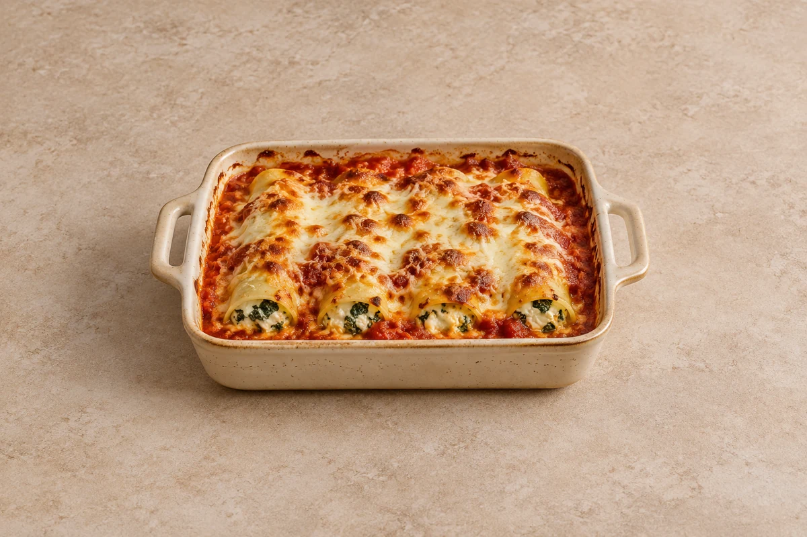

Bakes
Spinach & Ricotta Cannelloni
Pasta tubes filled with creamy spinach and ricotta, baked in tomato sauce with bubbling mozzarella. Serves 2.
Ingredient quantities update automatically

Ingredients
Filling and pasta
Tomato sauce
Method
Make the sauce
Heat the oil in a saucepan. Soften the onion over a medium heat for 5 minutes, add the garlic and cook for 1 minute. Add the tomatoes, water and oregano. Simmer for 10 minutes and season; keep the sauce slightly loose so it cooks the pasta.Prepare the spinach
Wilt the spinach in a large pan with the water clinging to its leaves for 2–3 minutes. Cool, then squeeze out as much liquid as possible and chop finely.Mix the filling
Mix the spinach with the ricotta, two-thirds of the grated hard cheese, nutmeg and a little salt and pepper.Fill the tubes
Heat the oven to 200°C / 180°C fan / gas 6. Spoon a third of the tomato sauce into a baking dish just large enough to hold the tubes in one layer. Fill the uncooked tubes using a piping bag or teaspoon and arrange in the dish. Follow your packet if it requires pre-cooking.Cover and bake
Pour the remaining sauce over the tubes, covering them completely. Scatter over the mozzarella and remaining hard cheese. Cover tightly with foil and bake for 30 minutes.Brown the top
Remove the foil and bake for another 10–15 minutes until golden and the pasta is tender. Rest for 5 minutes before serving. Use a larger dish or several dishes when increasing servings.
Tips & leftovers
Storage
Cool in shallow portions and refrigerate covered within 2 hours. Eat within 48 hours.
Freezing
Freeze cooled individual portions, tightly wrapped, for up to 2 months for best quality. Defrost fully in the fridge. Keep the tubes well covered with sauce so they do not dry out.
Reheating
Reheat once in an oven at 180°C / 160°C fan until steaming hot in the centre. Cover if the top browns before the middle is hot; portion size affects the time. Check the ricotta filling in the centre tubes is hot, not just the sauce around the edge.
Substitutions
Use frozen spinach, thawed and squeezed very dry, in place of fresh; judge the amount by the drained cooked spinach. Choose vegetarian-labelled hard cheese if needed.
Keeping leftovers safe
Cool cooked leftovers in small portions and refrigerate within 2 hours. Keep the fridge at 0–5°C and the freezer around −18°C. Freeze suitable leftovers promptly. Defrost fully in the fridge and use within 24 hours. Reheat only once, until steaming hot all the way through. Follow any shorter use-by or opened-pack instructions; using older cooked ingredients does not restart their storage time.
Food-safety guidance: Food Standards Agency: chilling and freezing · reheating leftovers.